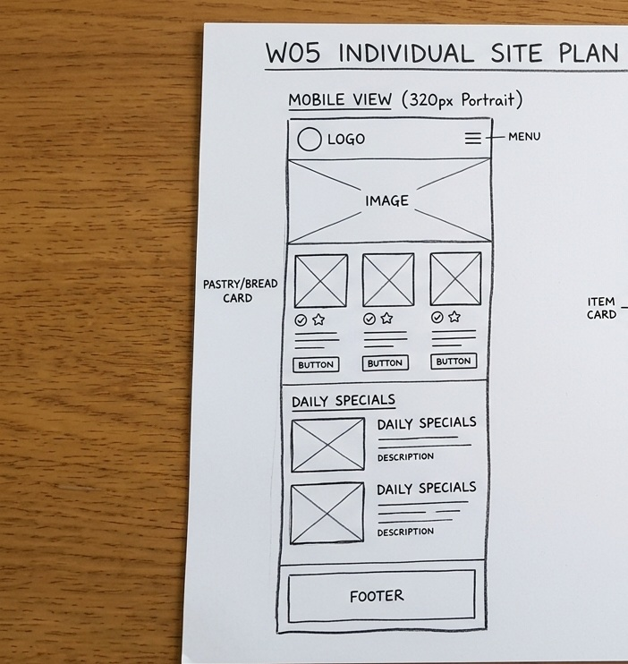
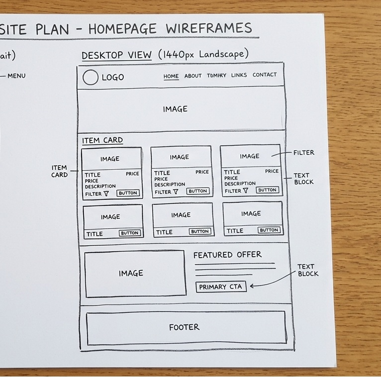

1. Site Name
Proposed Name: Crumb & Crust Bakery
Reasoning: This name evokes the immediate sensory experience of fresh, artisan sourdough bread and premium pastries. It is warm, memorable, and clearly communicates a focus on traditional, high-quality baking methods to local patrons.
Optional Domain Concept: crumbandcrustbakery.org
2. Site Purpose
The purpose of the Crumb & Crust website is to act as an online menu, dietary reference tool, and community scheduling resource. It will allow users to seamlessly browse our active selection of 15+ daily baked goods, check nutritional and allergen metrics, filter items by specific dietary restrictions (such as gluten-free or vegan), and submit formal catering pre-order requests.
3. Target Audience Scenarios
To ensure intuitive usability, the final production site structure will directly address and resolve these user situations:
Scenario A: "I am organizing an early morning office workshop this Thursday. Does this bakery offer pre-assembled morning catering platters of assorted pastries, and can I submit my menu customization selections online?"
Scenario B: "I have a severe dietary sensitivity to gluten. Can I easily filter or isolate your daily inventory options to confirm which loaves are entirely gluten-free or produced from alternative ancient grains?"
4. Color Scheme & Application
This site plan document dynamically reflects the exact color palette selections defined for the future application interface:
Applied to structural headers, primary text typography, and footers.
Applied to subheaders, active menu states, borders, and call-to-actions.
Applied to the page body canvas and container content fills.
5. Typography System
Playfair Display (Serif)
Applied to main structural headers (<h1>, <h2>, <h3>) to convey a premium, handcrafted, and traditional artisan aesthetic.
Lato (Sans-Serif)
Applied to standard body text, lists, scenarios, and user inputs to guarantee crisp, clean screen readability across all device viewports.
6. Layout Wireframes
Visual presentation layout mapping the responsive structures for both mobile devices and expanded desktop viewports:
Mobile View Layout

Desktop View Layout
